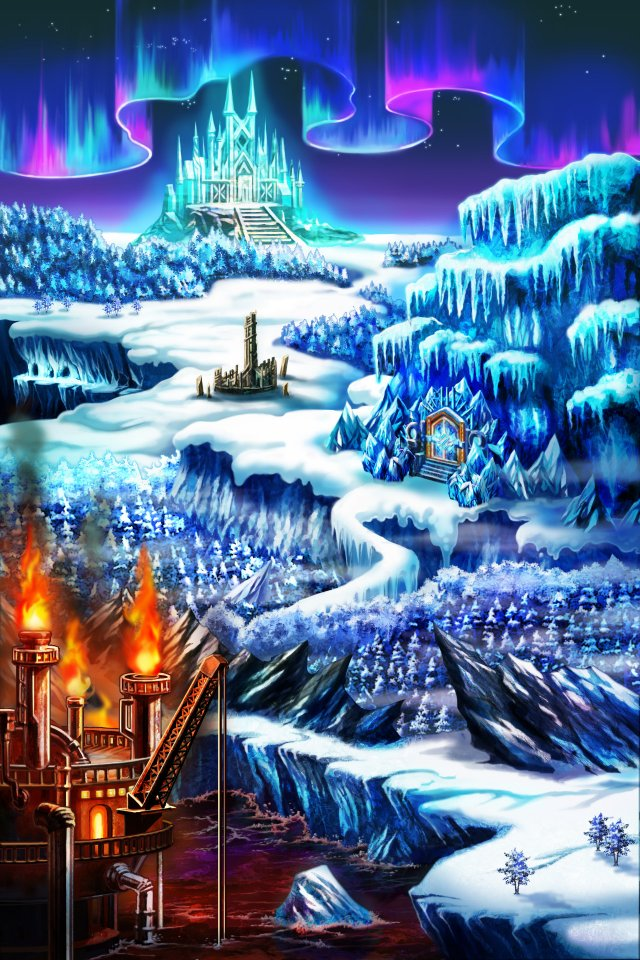
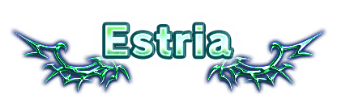

Shou-chan……新たな地エストリアへの道を開いておいたよ。
残っている危険な魔神はモーラだけだね……
でも、Shou-chan……気を付けて……
モーラの力がどんどん大きくなっていくのを感じるの……
混沌とした力の流れがこの地で何かを起こそうとしてる……
モーラを倒せばイシュグリアでの戦いの終わりもきっと近い……
私、早くみんなに……Shou-chanに会いたいよ……



セリア
モーラがここで何かをしようとしているのは 間違いないわ。
セリア
その何かを始める前に 私は彼女と話したいの。
セリア
それに、モーラの企みを止められれば この地の魔神の危険はほぼ無くなるわ。
セリア
モーラと本音で話すためには きっとアンタの力が必要になる。
セリア
ホラ、そんな驚いた顔してないで 早く私に付いてきなさいよ！
セリア
だったらグズグズしてないで 前に進むわよ！